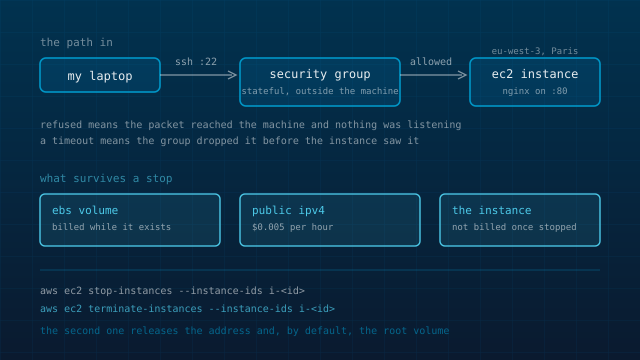

Everything I run runs on hardware I can point at: my laptop, the retired laptop I keep for conservation, and a headless machine I call aleph. I had never operated inside a cloud account, and that gap bothered me, because most of what I read about security and infrastructure assumes the reader knows what an account looks like from the inside. So in September 2025 I opened one, put a single EC2 instance on the free tier, and spent time moving through it.
This is written about a year later, so it is a description of how the platform behaves rather than a log of what I typed. The parts worth keeping are the ones that changed how I think about the machines I already run, and those are what this note is about.
The free study guide as a map
I began with the CLF-C02 exam guide, which is a free PDF and the closest thing AWS publishes to a table of contents for the platform. It divides the content into four domains: Cloud Concepts at 24 percent, then Security and Compliance, Cloud Technology, and Cloud Financial Management. As a map it is excellent. As teaching it is weak, because almost every line is a noun phrase. Region, availability zone, edge location, security group, key pair, AMI, instance profile, launch template.
Reading those words was easy and almost none of them stayed, because they named operations I already performed under other names. So I launched an instance, to have one thing the nouns could point at.
The account, and the free tier
The free tier moved just before I got there. The EC2 free tier usage page draws the line at 15 July 2025. An account opened before that date gets 750 hours a month of t2.micro or t3.micro for the first twelve months. An account opened after it gets credits instead, $100 at signup with up to $100 more for working through the foundational services, and a six month Free Plan, with no EC2 hour allowance in it. I opened mine in September 2025, so it is on the second model, and the difference is one you feel once you are inside: a quota tells you what is free, credits tell you how much of the normal price you have left.
One instance in eu-west-3, the Paris region, on an Ubuntu image, at a free tier size. I did most of the moving around from the command line, because aws ec2 describe-instances was faster than finding the right page in the console.
The security group sits outside the machine
This is where the platform and my habits diverged most, and it is the part I found most interesting. On my own machines the firewall runs on the box. I can list the rules, change them over ssh, and if I get it wrong there is still a local console to fix it from. A security group is attached to the network interface instead of to the operating system, and a packet that matches no inbound rule is dropped before the instance ever sees it. It is stateful, so one inbound rule is enough for the reply traffic to come back; there is no outbound rule to write for a response.
The consequence is a debugging distinction I did not have before:
- Connection refused means the packet reached the machine and no process was listening on that port. The security group did its job and the machine answered.
- A hang that ends in a timeout means the group dropped the packet. Nothing on the instance is involved, so nothing in its logs will tell you why.
The other difference is what happens when you lock yourself out of SSH. There is no console behind an EC2 instance. That gap is what AWS Systems Manager Session Manager is for: it opens a shell through the EC2 API using an instance role, so the recovery path is a second API rather than a keyboard plugged into the machine. I would rather have a console I can reach with a cable, and I would still put the instance behind a tailnet the way I put aleph behind one, but the API recovery path is a reasonable answer to a problem my own machines do not have.
The key pair, and what the image decides
The console generates the private key and hands it to you once. There is no way to read it back later, only to swap the key pair on a stopped instance and reboot. The username you log in as is decided by the image rather than by you: ec2-user on Amazon Linux, ubuntu on the Ubuntu images, and something else again on the rest. Mine was an Ubuntu image, so the user was ubuntu, and that was the one point in the whole exercise where the cloud and my own machines looked like the same job.
When the instance went away I deleted the key with it. A private key for a machine that no longer exists is just a file waiting to be found, and the platform has no way to hand one back, which is the right design even though it makes the whole setup impossible to resurrect.
A web server, and then IAM
I put nginx on it, listening on port 80 with the security group open to the whole internet, and served a site of mine from it rather than the default page. That was the part I kept turning over: an address in Paris that a browser anywhere could reach, on a machine whose entire existence was a handful of API calls. It also moved the audit question somewhere I was not used to looking. The part that decides what reaches the listener is not on the machine, so ss -tlnp and a ruleset dump are only half the answer.
IAM is the part of the account the guide weights most and the part that has no clean equivalent in anything I run at home. The idea worth taking away is the difference between a user with a long lived access key and a role attached to an instance. A role hands the instance temporary credentials through the metadata service, so there is no secret to write into a file on a machine that is not yours, and nothing to rotate when the machine is replaced.
The failure mode the Security and Compliance domain keeps circling is an identity with more room than the job needs, attached to something nobody is thinking about any more. On a platform where one policy reaches across every resource in the account, that is easy to arrive at by accident. My own habit is least privilege on a single box, and I would write the policy before the instance next time.
Stop, then terminate
A stopped instance is not billed for instance hours, but the EBS volume attached to it is billed for as long as it exists, and so is a public IPv4 address. Since 1 February 2024 AWS charges $0.005 per hour for every public IPv4 address, attached to something or not, with 750 hours a month of it included in the older free tier. The instance lifecycle page says it in one sentence: some resources, EBS volumes and Elastic IP addresses among them, incur charges regardless of the instance state.
So stop-instances is the command that looks like turning a machine off and is not, and terminate-instances is the one that releases the address and by default deletes the root volume. I stopped it, then terminated it, which is the order that actually leaves nothing behind. On the model my account is on, those charges come out of the credits rather than out of a quota, so they are easy to miss: nothing arrives as money, and the volume and the address are still there.
CloudTrail, which I do not have at home
One thing in the account is genuinely ahead of what I run at home, and it is the thing I went back and thought about most: every action in an AWS account is an API call, and CloudTrail records API calls. So the account has a history of decisions by default, not a history of file contents.
On aleph and on my laptop, a change committed to the flake leaves the file and its git history, which is good provenance for configuration. A change made by hand in a shell leaves nothing behind but shell history, and a change made by a compromised process leaves less than that. An audit log of who called what, with an identity attached to each call, is a thing my machines do not have and should.
My machines and the cloud, side by side
The instance did most of the teaching, because it turned each noun in the guide into something I had touched. The mapping onto what I run at home is not exact, but it is close enough to be useful.
| AWS | On my own machines |
|---|---|
| security group | the firewall on aleph, with the trust placed in front of the machine instead of on it |
| AMI | a disk image built from a config, which is what a NixOS image is |
| key pair | the ssh keys I already keep, except AWS holds the public half and gives you the private one once |
| instance role | a capability handed to a process instead of a secret handed to a human |
| CloudTrail | an audit log of who called what, which is the thing my own machines do not have |
If you are going to do the same exercise
- • Give the instance a job before you launch it. Serving something of your own over port 80 is enough, and it turns the security group from a form field into a decision.
- • Write the notes while the thing is running. The reasoning is the first part to go, and it is the part worth keeping.
- • Read the free tier page for the month you sign up rather than the month you read about it. AWS changed the model in July 2025 and the two versions are not comparable.
- • When you are finished, terminate and then check the volumes and the addresses. Stopping leaves both behind.
- • Start with the exam guide even if you have no interest in the certificate. It is the only free document that lists the whole platform in one place.
Further reading
- AWS Certified Cloud Practitioner exam guide (CLF-C02): the four domains and what each one expects you to know.
- AWS Free Tier FAQs: the July 2025 change from the twelve month model to credits.
- Amazon EC2 instance state changes: which states are billed, and which resources are billed anyway.
- The public IPv4 address charge: the announcement, the rate, and the free tier exception.
Keep reading
- A private cloud, sized for the people who actually use it
- One flake, three machines that barely resemble each other
No repository behind this one. The instance was a learning exercise, and it is terminated.